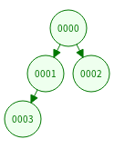

斜堆 (skew heap) 是一种常用的数据结构。它也是二叉树，且满足与二叉堆相同的堆性质：每个非根结点的值都比它父亲大。因此在整棵斜堆中，根的值最小。但斜堆不必是平衡的，每个结点的左右儿子的大小关系也没有任何规定。
在本题中，斜堆中各个元素的值均不相同。在斜堆 $H$ 中插入新元素 $x$ 的过程是递归进行的：当 $H$ 为空或者 $x$ 小于 $H$ 的根结点时 $x$ 变为新的树根，而原来的树根 (如果有的话) 变为 $x$ 的左儿子。当 $x$ 大于 $H$ 的根结点时，$H$ 根结点的两棵子树交换，而 $x$ (递归) 插入到交换后的左子树中。
给出一棵斜堆，包含值为 $0 \sim n$ 的结点各一次。求一个结点序列，使得该斜堆可以通过在空树中依次插入这些结点得到。如果答案不唯一，输出字典序最小的解。输入保证有解。
第一行包含一个正整数 $n$ ($2 \leq n \leq 50$)。
第二行包含 $n$ 个整数 $d_1, d_2, \cdots, d_n$，其中 $d_i < 100$ 表示 $i$ 是 $d_i$ 的左儿子，$d_i \geq 100$ 表示 $i$ 是 $d_i - 100$ 的右儿子。显然 $0$ 总是根，所以输入中不含 $d_0$。
输出仅一行，包含 $n+1$ 个整数，即字典序最小的插入序列。
这题裸搜显然是没有希望的，应当去发掘斜堆的某些性质。
这里有一个斜堆的 demo：Skew Heap Visualization
玩了一会儿可以发现，最后一个插入的节点 $v$ 具有一些性质：
根到 $v$ 的路径都是向左走的。证明很简单：因为如果直接插入，那么会插入到左子树，否则，子树交换后向左子树递归，因此节点 $v$ 一定是根的 $k$ 级左子树 (注意那个 demo 中是先向右找最后交换的，本质上其实是一样的)。
$v$ 没有右子树。证明亦很简单：如果 $v$ 是向下插入的 (大于根节点的值)，则 $v$ 就是一个叶节点，否则如果 $v$ 是向上插入的 (小于根节点的值)，则原来的根会作为 $v$ 的左子树，$v$ 还是没有右子树。
其实还可以知道，如果 (任意) 一个节点没有左子树，则它一定不会有右子树。证明：用反证法。假如说点 $u$ 存在右子树 $u.r$，那么它一定是由左子树 $u.l$ 通过交换得来的 (由于插入只会插到左子树)。那么访问到 $u$ 时，会交换 $u.l$ 和 $u.r$，此时 $u.l$ 一定非空。亦即一个有右子树的点一定有左子树。
于是，对新插入的节点 $v$，有这样一个性质：如果 $v$ 不是叶节点，那么，根到 $v$ 的路径上的所有点都有右子树。否则假设 $u$ 没有右子树，那么在访问 $u$ 的时候 $u$ 变成了只有左子树 (且最终这棵左子树不是单独的 $v$)，那么说明 (插入 $v$ 之前) $u$ 原先只有右子树，矛盾。类似地，如果 $v$ 是叶节点，那个根到 $v.p$ 的路径上的所有点都有右子树。
好了，这样对于最后插入的节点 $v$，它至多有两个候选，如果它只有唯一的候选，那么最后一个值就是它，否则如果它有两个候选 $u$ 和 $u.l$，由 (小根) 堆的性质，$u$ 的值 $val_u$ 比 $u.l$ 的值 $val_{u.l}$ 要小，根据字典序最小的要求，由此肯定 $u$ 先插入，$u.l$ 后插入。(如下图有 $0-1-2-3$ 和 $0-3-2-1$ 两种插入方案)
找到最后插入的节点 $v$ 后，把它记入答案，然后将斜堆复原，即恢复成未插入 $v$ 时的情况。我们只需重新连接 $v.l$ 和 $v.p$，然后向上跑到根，并把所经过的节点左右子树交换即可，重复 $n + 1$ 次即得答案。
#include <bits/stdc++.h>
#define N 68
using namespace std;
int n, i, j, t;
int root = 0;
int lc[N], rc[N], p[N], ans[N];
int main(){
memset(p, -1, sizeof p);
memset(lc, -1, sizeof lc);
memset(rc, -1, sizeof rc);
scanf("%d", &n);
for(i = 1; i <= n; ++i){
scanf("%d", &j);
(j >= 100 ? rc[j -= 100] : lc[j]) = i;
p[i] = j;
}
for(i = n; i >= 0; --i){
for(t = root; ~rc[t]; t = lc[t]);
if(~(j = lc[t]) && !(~lc[j] || ~rc[j])) t = j;
ans[i] = t;
if(t == root) {root = lc[t]; p[root] = -1; continue;}
if(~(lc[p[t]] = lc[t])) p[lc[t]] = p[t];
for(t = p[t]; ~t; t = p[t]) swap(lc[t], rc[t]);
}
for(i = 0; i <= n; ++i) printf("%d ", ans[i]);
return putchar(10), 0;
}
坑1：注意最后一个数后面要加空格，否则会 Presentation Error！